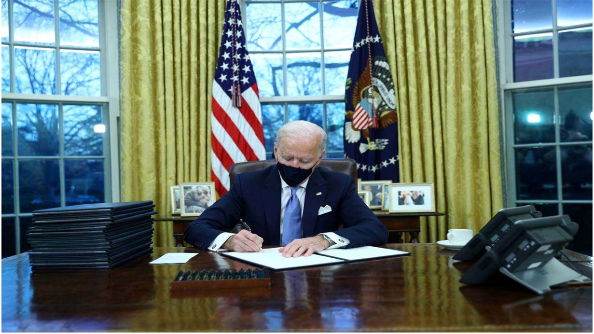

Pakistan, India and Afghanistan: Biden's South Asia Policy
Throughout history, Pakistan has been an important element in the US foreign policy in Afghanistan particularly in relation to the peace process.
On 19 January, General (retired) Lloyd Austin, president-elect Joe Biden's pick to become the United States (US) Secretary of Defence, spoke at the Senate Armed Services Committee hearing and emphasised that he will put pressure on Pakistan to prevent it from allowing its territory to be used as a sanctuary for militants and violent extremist organisations. On a separate note, however, the defence secretary nominee has shown a keen desire to enhance the US-India strategic partnership and bolster the overall arrangement of the Quadrilateral Security Dialogue (Quad). These statements illustrate how a Biden administration may recalibrate the US' South Asia policy and preserve India's role as a status quo regional leader.
Futuristic township in the most sought-after location in Chennai!
Codename New Porur at Thirumazhisai, Chennai offers stylish, functional, vibrant, and right-sized homes full of lifestyle amenities.
functional, vibrant, and right-sized homes full of lifestyle amenities.
Where civilization emerged between two rivers, climate change poisons land and empties villages
Dozens of farming villages have been abandoned, and the intrusion of saltwater is poisoning lands that had been passed for generations.
IT Outsourcing: Services for SMEs
Does your company need support with IT management? You could take advantage of the IT outsourcing services
According to a study from IBM, 56% of business leaders around the world expect an increase in the use of outsourcing services in the three years following the survey. These solutions, which are increasingly popular with SMEs, ensure better management of IT systems, which are essential for all businesses!
Most Popular News Blogs on the Internet
Blogging may be a fun hobby for Tumblr teens or WordPress write
So it’s a very difficult task to find a position who lies are no1 or no2. After I analysis of Alexa rank, Domain authority, Popularity of blog, and award Winner. After Analysis of these things, we concluded their position as the famous blogger in India. In this post, I try to Deliver Great information about Top Indian Bloggers 2020.
Spotted in India: Humans and leopards living in harmony
In 2020, leopards killed 35 people in the state of Maharashtra, the highest in a decade. Further north, in the state of Uttarakhand, as of October 2020, leopard attacks had claimed 24 lives, a sharp 30 per cent increase from the previous year.
These clashes often lead to leopards being killed or captured and released elsewhere away from human settlements, despite research indicating that these methods do not reduce the number of attacks. In some cases, translocation has led to increased attacks.
“The thing is that the conflict is an old one, [but] the method to treat the conflict hasn’t really changed,” says Sanjay Sondhi, founder of Titli Trust, a nature conservation non-profit based in Uttarakhand.
A Senior Scientific Director at Wildlife Conservation Society India (WCS-India), Dr Athreya’s research in Maharashtra had led her to collaborate with the state’s forest department to start Mumbaikars for SGNP, a programme that sees citizens lead the way in engaging the community on learning to live safely alongside leopards.
Despite the long history of leopard-human conflict in Uttarakhand, Sanjay was encouraged by the findings of a survey on attitudes towards leopards, which was conducted with Dr Athreya. “People were very tolerant towards leopards. Uttarakhand is a hill state and people have grown up with wild animals throughout their lives,” he points out.
Poland Recognises India's Covishield Vaccine, Exempts Takers from Quarantine
A day after India breached the 100-crore vaccination mark, Prime Minister Narendra Modi on Friday called the vaccination program science-driven and science-based while also cautioning the citizens to celebrate the upcoming festivals carefully as to avoid the spread of the virus. The Prime Minister yesterday had hailed the vaccination milestone as a triumph of Indian science, enterprise, and collective spirit of 130 crore Indians.